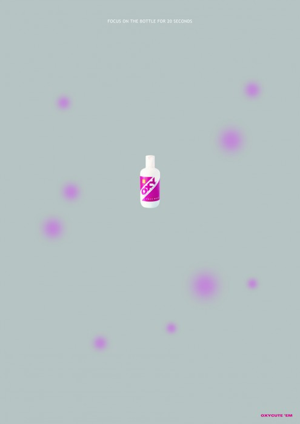

Взросление редко для какого подросткового организма проходит бесследно. Юношеские прыщи кому-то надолго портят кожу, но чаще не надолго портят жизнь.
Заработать на подростках Помочь подросткам пытаются многие, но я покажу результат работы тех, кто пытается помочь тем, кто пытается помочь подросткам.

[poll id="7"]